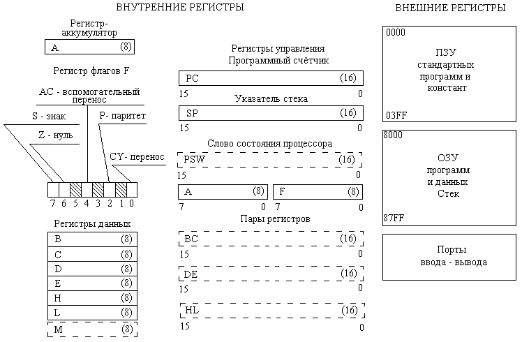

| ||||||
|
| ||||||
1.КРАТКАЯ ХАРАКТЕРИСТИКА МИКРОПРОЦЕССОРОВ МП
К580
Длина слова МП К 580- 8 битов или байт. При обращении к памяти используются 16- битные адреса, что позволят обращаться к 65536 ячейкам памяти.
МП имеет 8-битный аккумулятор (регистр А ), шесть 8-битных регистров общего назначения (В, C, D, E, H, L ), а также регистр флагов F. Регистры общего назначения могут объединяться в 16-битные регистры двойной длины.
Содержимое аккумулятора и регистра флагов объединяется в «слово состояния процессора» (PSW).
В МП результат характеризуется следующими флагами:
(1- флаг установлен, 0-сброшен):
флаг знака S (SING); совпадает со старшим битом результата;
флаг нуля Z (ZERO); устанавливается при нулевом результате;
флаг вспомогательного переноса AC(AUXILIARY CARRY); устанавливается при возникновении переноса из третьего бита в четвертый;
флаг паритета P (PARITY); устанавливается при наличии в результате четного числа единиц;
флаг переноса CA (CARRY); устанавливается при переносе из старшего бита результата (при вычитании становится флагом заема);
Команды МП по своим форматам делятся на одно-, двух- и трехбайтные.
При написании программ используются сокращенные английские наименования команд (см. приложение).
Для успешной подготовки программ необходимо представлять совокупность элементов УОУ, их назначение и взаимодействие, т.е. программистскую модель УОУ. Такая модель изображена на рис. 1.
|
| ||||||
|